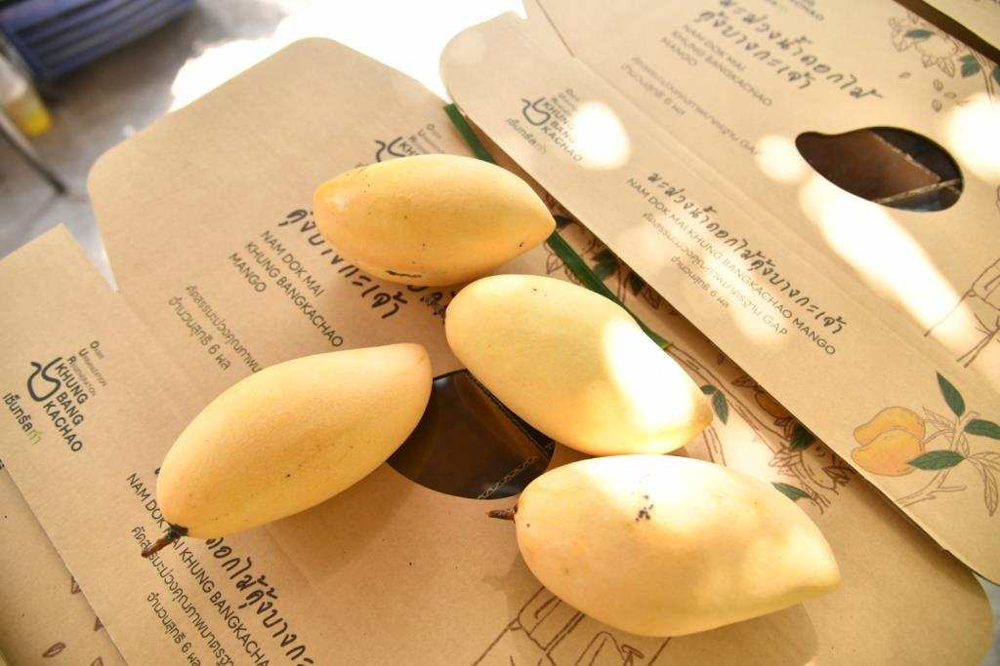

Golden Mango
Home
Data
Menu
Member
มะม่วงน้ำดอกไม้ GI คุ้งบางกะเจ้า
แนวคิดการอนุรักษ์พื้นที่สีเขียวคุ้งบางกะเจ้า
จากร่องสวนมะร้าวสู่มะม่วงนํ้าดอกไม้

หากย้อนกลับไปเมื่อ 70 กว่าปีก่อนพื้นที่ตรงบริเวณคุ้งบางกะเจ้าจะมีลักษณะทางกายภาพคล้ายกับจังหวัดสมุทรสงครามในปัจจุบัน คือ เป็นพื้นที่ปลูกน้ำตาลมะพร้าวของจังหวัดสมุทรปราการ ชาวบ้าน ในพื้นที่ส่วนใหญ่มีอาชีพหลัก คือ ทำนํ้าตาลจากมะพร้าว ดังนั้นพื้นที่ส่วนใหญ่จะเป็นสวนมะพร้าวชาวสวนจะปีนเก็บมะพร้าวนำมาทำน้ำตาลมะพร้าวขายเป็นหลัก และมีวิธีการปลูกมะพร้าวโดยยกร่องสวนหรือภาษาที่คนในท้องถิ่นเรียกว่า "ร่องสวนเจ๊ก”
สาเหตุที่ปลูกต้นมะพร้าวเป็นพืชหลักในสวนเพราะต้องนำมาทำนั้าตาลมะพร้าวเช่นเดียวกับคุณพ่อของพันโท ชำนาญ(ปัจจุบันอายุ 95 ปี เป็นคนที่ทำงานอย่างจริงจังและ ชอบช่วยเหลือคนอื่น และเคยได้วับรางวัลอาสาพัฒนาชุมชนดีเด่นของจังหวัดสมุทรปราการ) ซึ่งอดีตมีพื้นที่ทำสวนมะพร้าวประมาณ 6ไร่เศษและมีอาชีพทำน้ำตาลมะพร้าวขายผู้พันเล่าให้พืงว่า เกิดมาก็เห็นว่าคนแถวย่านบ้านนี้มีแต่สวนมะพร้าว ซึ่งภายหลังเมื่อคุณพ่อของผู้พันได้ส่งลูกไปเรียนหนังสือในเมืองจึงทำให้ไม่มีใครได้สืบทอดอาชีพการทำน้ำตาลจากมะพร้าวต่อจากท่าน
ขณะเดียวกัน ต้นมะพร้าวที่เคยปลูกไว้ก็สูงขึ้นเรื่อยๆต้นสูงมากจนยากต่อการเก็บเกี่ยวและดูแลรักษาต่อมาในช่วงหลังคุณพ่อจะใช้วิธีการไปขึ้อนั้าตาลมะพร้าวที่ใส่ปีบในตลาดพระประแดงแล้วนำมาหลอมและทำเป็นก้อนใหม่โดยทำเป็นปึกๆละครึ่งกิโลกรัม
สาเหตุส่วนหนึ่งเพราะคุณพ่ออายุมากขึ้นก็ไม่ต้องขึ้นต้นมะพร้าวที่สูงใหญ่เพื่อไปตัดมะพร้าวในสวนของตัวเองอีก เมื่อมะพร้าวต้นสูงและตนเองอายุมากขึ้นลูกหลานก็ไปรํ่าเรียนในเมืองไม่มีใครช่วยทำสวนมะพร้าวในสวนจึงไม่ได้นำไปใช้ประโยชน์ต่อ
ต่อมาในช่วงหลังๆต้นมะพร้าวเริ่มทยอยตายไปเรื่อยๆ จากเดิมที่คุณพ่อเคยเป็นผู้ผลิตน้ำตาลเองก็หันมาเป็นพ่อค้าขายนั้าตาลแทนโดยซื้อน้ำตาลเป็นปีบมาจากตลาดนำมาหลอมใหม่ ในยุคที่อุตสาหกรรมเริ่มมีโรงงานเข้ามาในพื้นที่ชาวบ้านหลายคนในพื้นที่เลิกทำสวน หรือคนที่ไม่ได้เรียนหนังสือจะออกไปหางานทำข้างนอก เช่น ไปทำงานตามโรงงานเปิดใหม่ในพื้นที่ เช่น โรงงานกระดาษ โดยสมัยก่อนคนแถวนี้จะเรียนจบแค่ ป.4และไปทำงานโรงงานมีเพียงไม่กี่ครอบครัวที่ส่งลูกหลานไปเรียนในเมืองเช่นเดียวกับครอบครัวของผู้พันผู้พันจึงได็ใปเรียนในเมืองตั้งแต่เด็กจนจบปริญญาตรี เป็นคนแรกในพื้นที่โดยมีคุณพ่อทำสวนอยู่เพียงลำพังเพราะคุณพ่ออยากให้เรียนหนังสือมากกว่ามาเป็นชาวสวน
ต่อมาประมาณปี 2547-2548 เกิดปัญหาหาน้ำท่วม และน้ำเค็มเข้าขังในพื้นที่เป็นระยะเวลานานทำให้มะม่วงน้ำดอกไม้พันธุ์เขียวนวลซึ่งเป็นพันธุ์ ตั้งเดิมของท้องถิ่นที่ปลูกด้วยการเพาะเมล็ดและปลูกแซมไว้ในสวนมะพร้าวทั้ง 15 ต้นตายหมด จึงคิดที่จะปลูกใหม่เพื่อเอาไว้ให้ลูกกินโดยปรับพื้นที่ของคุณแม่ที่อยู่ด้านหลังประมาณ 6ไร่เศษเริ่มด้วยการตัดต้นมะพร้าว ทิ้งไปประมาณ 10 ตักดินในท้องร่องสวนมาไว้ด้านบนเพราะมีธาตุอาหารสะสมอยู่
จากนั้นก็ซื้อดินมาถมในร่องสวนมะพร้าวให้เต็ม (ประมาณ 90,000 กว่าบาท) และทำระบบนั้าไว้ล้อมรอบสวนแทนแล้วจึงเริ่มปลูกมะม่วงรุ่นแรกประมาณ 45 ต้น ขณะที่ตลอดชีวิตที่รับราชการมาผู้พันมีความคิดว่าเมื่อทำงานต้องมีการเก็บออมและใช้จ่ายอย่างประหยัด ไม่ฟุ่มเพีอย ประกอบกับเห็นตัวอย่างจากรุ่นพี่หลายคนที่เกษียณแล้วก็ดูไร้ค่าไร้ความสำคัญจึงได้เก็บเงินส่วนหนึ่งไว้ใช้ยามเกษียณ และแบ่งมาใช้พัฒนาพื้นที่สวนและปลูกบ้าน ในปี 2550 ก่อนพ้นโทชำนาญจะเกษียณอายุราชการประมาณ 2 ปี ได้วางแผนจะกลับมา อยู่บ้านที่บางกะเจ้า จึงเริ่มต้นพัฒนาพื้นที่บ้านสวนด้วยการปลูกไม้ผลเพราะมองว่ากว่าต้นไม้จะให้ผลผลิตก็ใซ้เวลาประมาณ 3ปีจึงนำสายพันธุไม้ผลดีๆมาปลูกไว้โดยปลูกมะม่วงนํ้าดอกไม้พันธุเขียวนวลเป็นหลัก เพราะเป็นพันธุดั้งเดิมของคุ้งบางกะเจ้ารวมถึงปลูกผลไม้และสมุนไพรอื่นๆร่วมด้วยเช่น มะพร้าว ส้มเขียวหวาน ส้มโอ กล้วยหอม ไผ่ สัปปะรด พิลังกาสา ขนุน